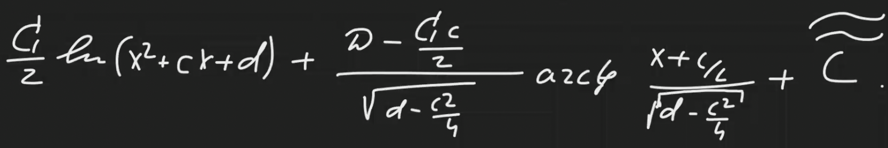

Элементарные дроби
Обычно выделяют 2 типа элементарных дробей, но выделим 4 типа
1-й тип
\[ \int \dfrac{A}{x-a} dx = A \ln |x-a| + C\]
2-й тип
\[ \int \dfrac{B}{(x-b)^{k}} dx = B\dfrac{(x-b)^{1-k}}{1-k} + C \;\; k \in \mathbb{N}, k \cancel{=} 1\]
3-й тип
Слишком долго техать
\[\int\dfrac{Cx + D}{x^{2} + cx + d}dx = \frac{C}{2} \ln(x^{2} + cx + d) + \frac{D - \dfrac{Cc}{2}}{\sqrt{d - \frac{c^2}{4}}} \arctan\left(\frac{x + \frac{c}{2}}{\sqrt{d - \frac{c^2}{4}}}\right) + C \;\; \dfrac{c^{2}}{4} - d < 0\]

Figure 1: Я лучше сделаю скриншот
4-й тип
Прошлое я всё же сгенерил с гпт, а этот какой-то совсем длинный \[ \int\dfrac{Ex + F}{(x^{2} + ex + f)^{l}}df\;\; \dfrac{e^{2}}{4} - f < 0\]